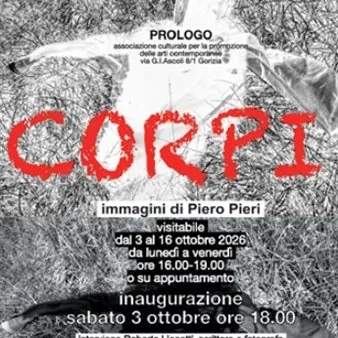

da sab 3 ott a ven 16 ott
Corpi
L’associazione Prologo di Gorizia inaugura la mostra personale di Piero Pieri dal titolo Corpi, un lavoro fotografico che prende spunto dalle tracce - indumenti ed effetti personali - che i migranti lasciano nel loro passaggio sul Carso durante la tappa finale della rotta…
 Indicazioni
Indicazioni
- Costi e prenotazioni
- Costo non indicato · Prenotazione non indicata
- Programma
- Programma da verificare. Apri la fonte ufficiale per orari e possibili aggiornamenti.
- In caso di maltempo
- Nessuna indicazione specifica pubblicata.
- Note
- Acquisito automaticamente dalla fonte.
L’EVENTO
Descrizione completa
L’associazione Prologo di Gorizia inaugura la mostra personale di Piero Pieri dal titolo Corpi , un lavoro fotografico che prende spunto dalle tracce - indumenti ed effetti personali - che i migranti lasciano nel loro passaggio sul Carso durante la tappa finale della rotta balcanica. Il progetto artistico di Piero Pieri tuttavia non vuole essere la documentazione di quel dramma, quanto piuttosto la presa in carico di quelle vicende per farne una riflessione personale: possiamo noi tutti aumentare la nostra empatia con quelle storie? Ma soprattutto possiamo sentirci accomunati a quelle persone nella loro grave condizione di bisogno, riconoscendo nella condizione umana l’essere di passaggio nello spazio di una vita? Corpi in transito appunto, che come in queste immagini lasciano tracce, indumenti svuotati, a simbolo anche della memoria e del lascito delle nostre azioni. Ne esce una serie di fotografie realizzate con tecnica analogica su stampa fine art, immagini prodotte come delle messe in scena. Soltanto l’ultima si distingue perché riprende nella realtà la giacca abbandonata da un migrante, su cui insiste l’ombra di un corpo in transito.
Inaugurazione Sabato 3 ottobre alle ore 18.00 interviene Roberto Lionetti Visitabile dal 3 al 16 ottobre 2026 da lunedì a venerdì h 16.00-19.00 o su appuntamento 3662440162
IL PROGRAMMA
Programma e orari
Appuntamenti raccolti dalle fonti elencate. Dove manca un orario, non è ancora disponibile in questa scheda.
Programma pubblicato
- 16.00-19.00
INFORMAZIONI UTILI
Prima di partire
- Controllare la fonte prima di partire.
ORGANIZZAZIONE